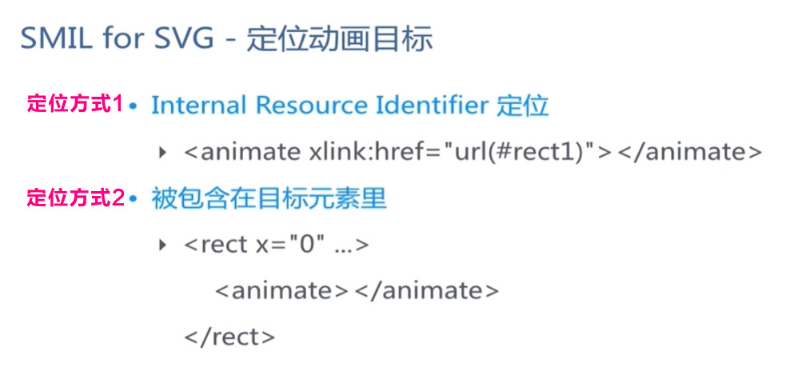

SVG动画 - animate-动画原理
SVG 文档、
SVG 手册、
SVG 教程、
SVG 在线编辑器1、
SVG 在线编辑器2

<use>元素在SVG文档内取得目标节点，并在别的地方复制它们。
它的效果等同于这些节点被深克隆到一个不可见的DOM中，然后将其粘贴到use元素的位置，很像HTML5中的克隆模板元素。
因为克隆的节点是不可见的，所以当使用CSS样式化一个use元素以及它的隐藏的后代元素的时候，必须小心注意。隐藏的、克隆的DOM不能保证继承CSS属性，除非你明文设置使用CSS继承。
注：出于安全原因，一些浏览器可能在use元素上应用同源策略，还有可能拒绝载入xlink:href属性内的跨源URI(在SVG2中，已将该xlink:href=""属性弃用，可直接用href="")。